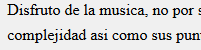
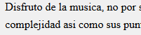
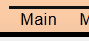
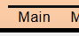

Selector Universal
Se utiliza para seleccionar todos los elementos de una pagina web, aplicando estilos a todos ellos simultaneamente
 

Selector de tipo
Selecciona y estiliza todos los elementos HTML de un tipo específico, simplemente usando el nombre de esa etiqueta HTML.
Selector por ID
Es una forma de apuntar a un elemento HTML específico y único dentro de una página web, utilizando su atributo id.
Selector por clase
Sirve para aplicar el mismo estilo a múltiples elementos, incluso de diferentes tipos, promoviendo la reutilización de estilos y la organización del código.
Selector por atributo
Permite aplicar estilos a elementos HTML basándose en la presencia o en el valor específico de sus atributos.
Selector por lista
Forma de aplicar un mismo estilo a varios elementos diferentes a la vez, separando los selectores individuales con comas.
Selector de descendientes
Permite seleccionar un elemento (o varios) que se encuentra dentro de otro elemento, sin importar cuán profunda sea la relación de descendencia o anidación.
Selector de hijos directos
Permite estilizar solo los elementos que son hijos inmediatos de otro elemento, distinguiéndolos de los nietos u otros descendientes.
 

Selector hermano adyacente
Permite estilizar solo los elementos que son hijos inmediatos de otro elemento, distinguiéndolos de los nietos u otros descendientes.

Selector hermano general
Selecciona todos los elementos hermanos de un elemento específico, que son hijos del mismo padre y aparecen después de ese elemento en el código HTML, sin importar si están o no inmediatamente adyacentes.